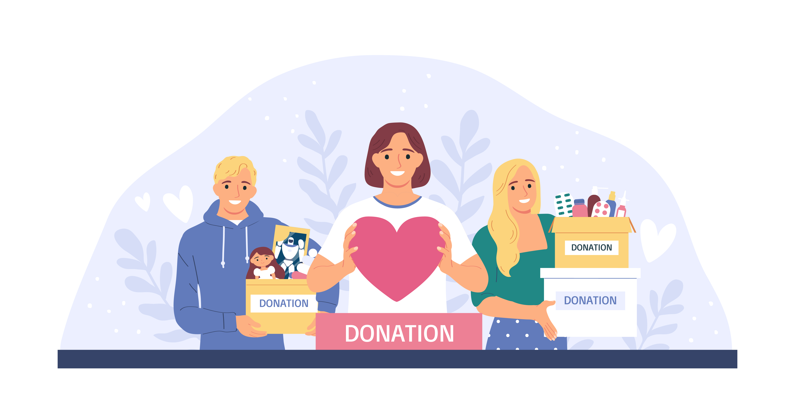

Enquiry
Events
Your involvement in our events enable us to support over 150 creches in rural KZN with training of 400 caregivers in Early Childhood Development and providing breakfast to over 4500 pre-school children daily.
Donate Now
There are a number of ways in which you can donate funds
Online Payment via secure pages using your credit card:
Click Here for Secure Credit Card Donations
By Direct Deposit or EFT into our donations Bank Account:
Feed The Babies Fund
FNB Davenport
Branch: 220226
Account: 62045358323
Sponsor a Baby
Our ‘sponsor a baby’ initiative is a fundraising effort to ensure consistency of funds on a monthly basis in order for us to better budget as to the number of babies we can feed on a regular basis.
The cost to feed a baby over the age of 6 months is approximately R30 per month. With this initiative, we ask you to ‘sponsor’ a baby; or babies; by signing a monthly debit order for R30 or multiples thereof. This amount will be deducted from your bank account monthly on the date stipulated by you and continue until cancelled by you in writing.
All ‘sponsors’ will be captured on our database and receive regular updates on the work, initiatives and successes of Feed the Babies Fund.
Schools Project
Our school project, directed at pre-schools, primary and high schools, takes the form of education, social awareness and fundraising.
We must reiterate that the appeal with our school project is to the family unit and friends; we do not want children to approach strangers for contributions.
As a sign of our appreciation for funds raised, the children are treated to a concert and certificates are handed out to all children donating R30 or more and schools are issued with an overall certificate or a letter of gratitude.
We also have some schools who do regular collections of toys, clothing, etc. and we encourage them, where geographically possible, to accompany us when we distribute these items to a needy crèche.
Should any school not currently being visited by Feed the Babies Fund wish to be included in this Project, please give Sandy or Dean a call at our offices or fill in the form on our contact page and we will get back to you as soon as possible.
Our Wish List
As we assist crèches with a variety of much needed items, our wish list changes from time to time and season to season however, our core needs remain as per the list below.
Should you wish to donate items on our wish list, we can collect directly from you or they can be delivered to our offices at 23 York Avenue, Glenwood.
Things needed for our crèches
- ECD: Educational Items (Posters, Books, Stationery, etc.) and Toys
- Centres: Blankets, Mattresses, Carpets, Furniture (Kiddies Tables & Chairs, etc.)
- General Office Requirements (Registers, Pens, Pencils, etc.)
- Building Materials and Other Forms of Shelter (Containers, ‘Plett’ Homes)